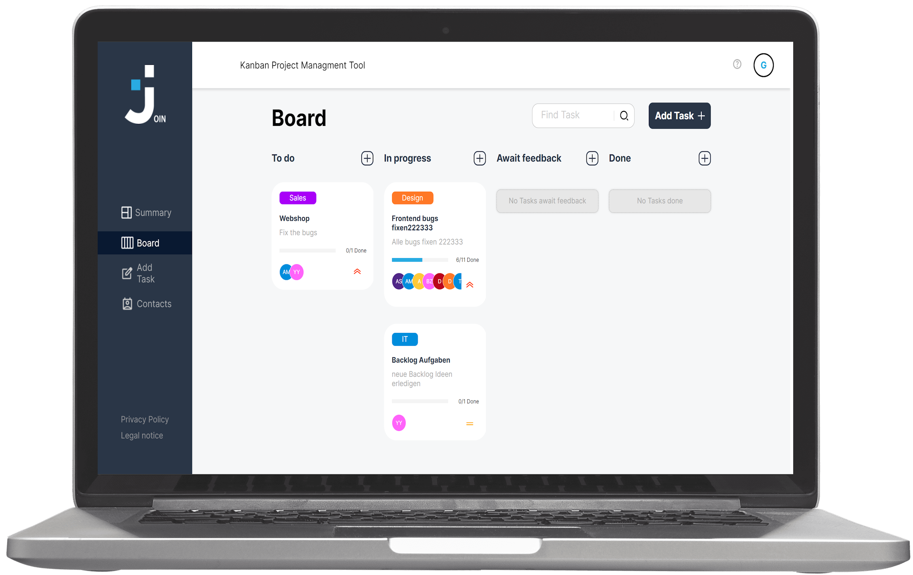
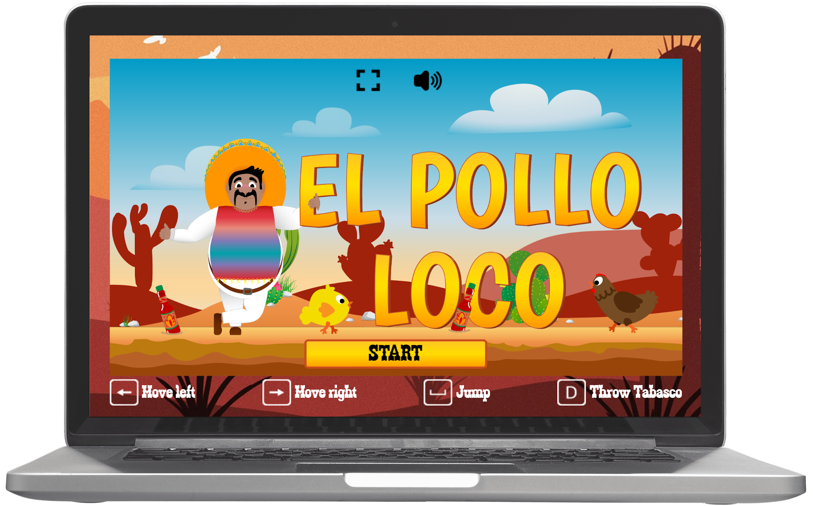

Join
JavaScript | HTML | CSS
Task manager inspired by the Kanban System. Create and organize tasks using
drag and drop functions, assign users and categories.
El Pollo Loco
JavaScript | HTML | CSS
A simple Jump-and-Run game based on an object-oriented approach. Help Pepe
to find coins and tabasco bottles to fight against the Chicken Boss.
